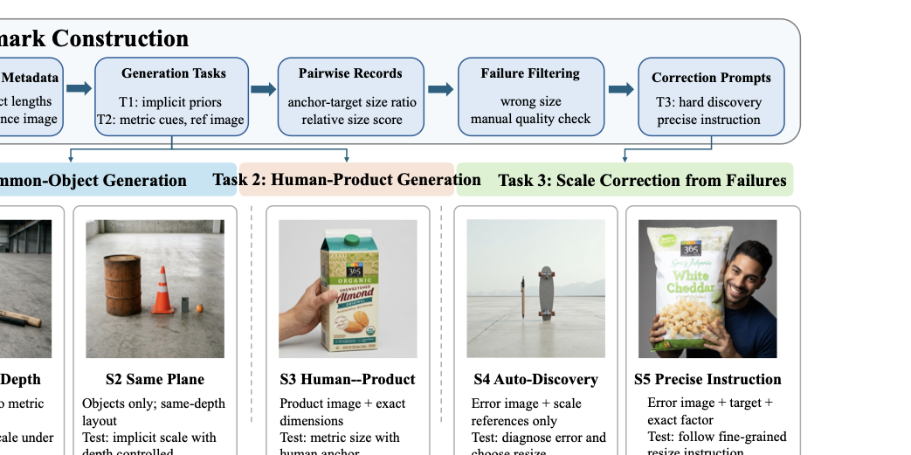
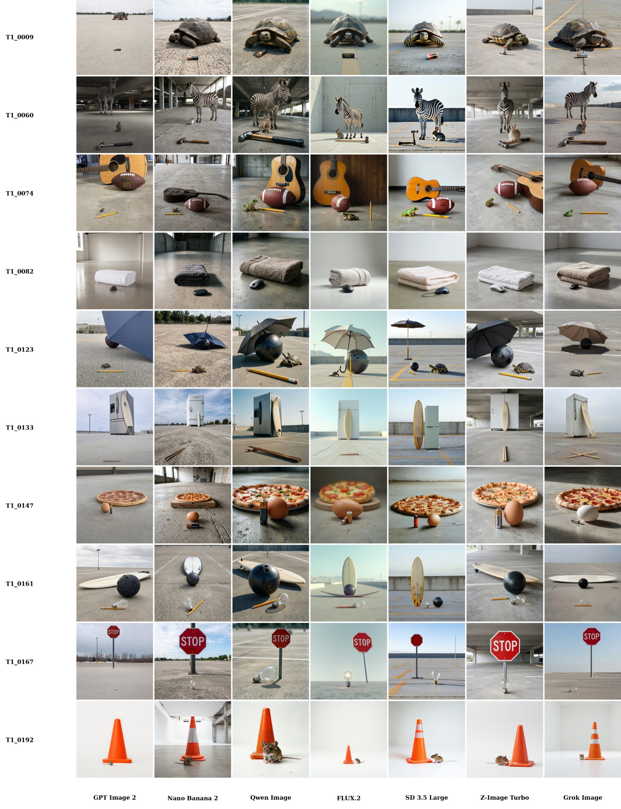
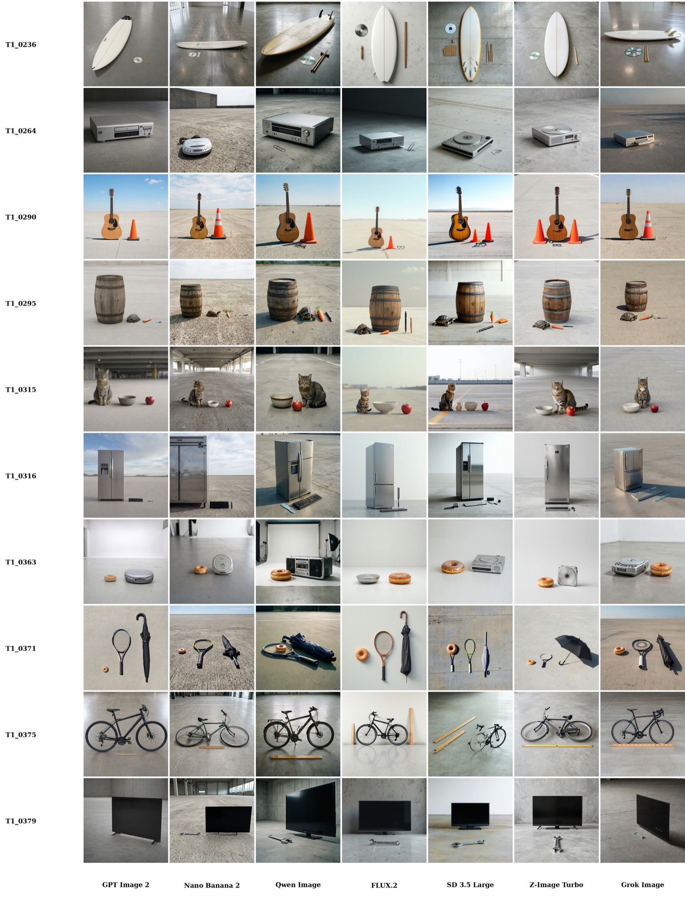
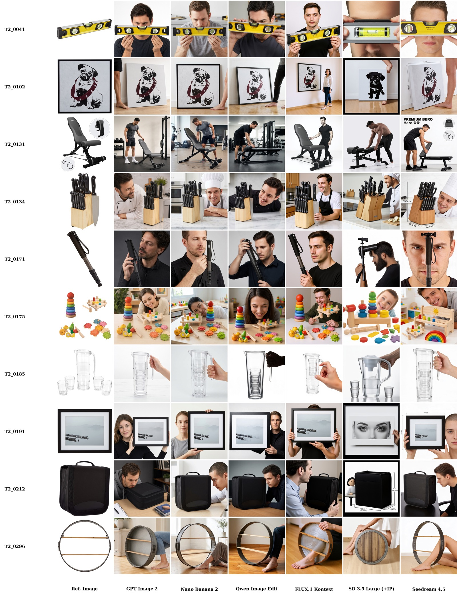
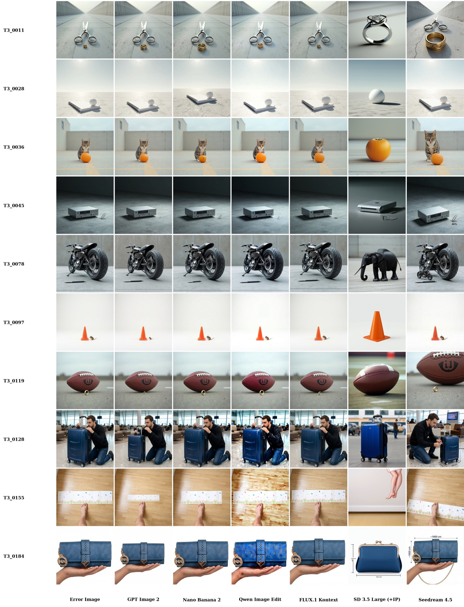
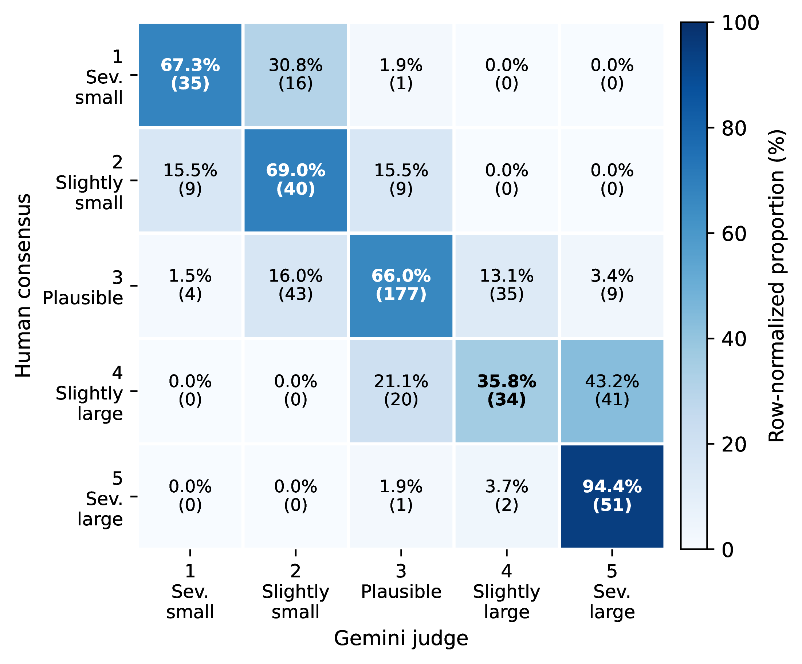
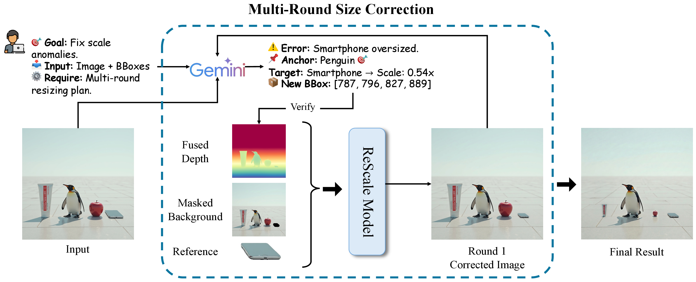
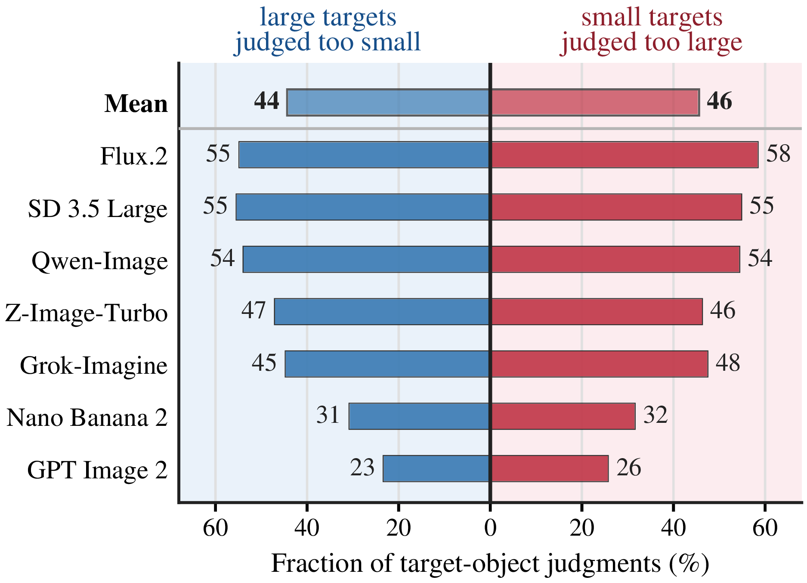
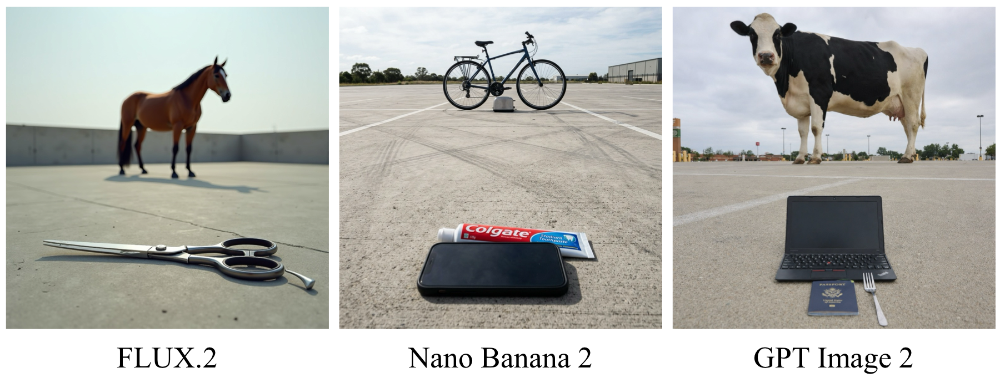

GenScale: A Benchmark for Relative Object Scale in Image Generation and Editing
Boston University Creatify AI
arXiv
Abstract
Modern image generation and editing systems can produce photorealistic, prompt-aligned images, but still often render familiar objects at implausible relative sizes. To measure this failure mode, we introduce GenScale, a benchmark and evaluation protocol for real-world relative object scale in image generation and editing. GenScale contains 900 image-level entries and 1,643 pairwise anchor-target scale relations across common-object generation, human-product generation with metric dimensions, and scale correction from failed generations.
We further design a human-calibrated ordinal judge for scalable pairwise scale evaluation, and introduce Rescale, a model-agnostic post-processing agent for localized scale correction without modifying the source generator. Experiments reveal that state-of-the-art image generators and editors cannot reliably observe relative scale yet, while Rescale consistently improves scale plausibility across generated and edited images.
GenScale Benchmark
GenScale evaluates physically grounded relative scale as a pairwise anchor-target relation with structured metadata: object identities, physical reference lengths, expected 3D ratios, scenario labels, and product references when applicable.

Tasks and Scenarios
The benchmark spans text-only generation, reference-conditioned human-product generation, and editing-based correction. The figures below are shown at their original aspect ratios so the visual comparisons remain readable.




Human-Calibrated Evaluation
GenScale evaluates each generated image through pairwise anchor-target relations. The evaluator receives the image, object names, physical reference lengths, expected 3D ratio, and a five-point ordinal rubric: severely undersized, slightly undersized, plausible, slightly oversized, or severely oversized. Invalid pairs are omitted only when reliable scale judgment is impossible.
A Gemini-based judge is calibrated against nine human raters on a 527-pair calibration set. Its disagreements with human consensus are mostly ordinally local, enabling large-scale model comparisons while preserving the pairwise evaluation protocol.

Rescale: Agentic Relative-Scale Correction
Rescale uses GenScale's structured scale metadata as a correction interface. Given an image and object-size references, it diagnoses scale anomalies, chooses an editable target, predicts a resize factor and anchor point, and performs localized correction while preserving identity, layout, lighting, and background.

Results
GenScale exposes relative scale as a distinct unsolved capability, separate from visual fidelity or prompt adherence. Across modern generators and editors, the benchmark reveals mean regression in common-object generation, product magnification in human-product generation, and weak autonomous diagnosis in scale correction.


Task 1: common-object scale remains far from solved; the best model reaches only 56.5% plausible pairwise scale.
Task 2: explicit metric product cues help, but models still frequently magnify products relative to human anchors.
Task 3: general-purpose editors are much stronger with precise resize instructions than with autonomous scale-error discovery.
Rescale: structured diagnosis and localized editing reduce scale error across generated and edited images with minimal visual-quality degradation.
BibTeX
@article{li2026genscale,
title = {GenScale: A Benchmark for Relative Object Scale in Image Generation and Editing},
author = {Li, Lingxiao and Whitton, Max and Wu, Ledell and Gong, Boqing},
journal = {arXiv preprint},
year = {2026},
note = {To appear on arXiv}
}